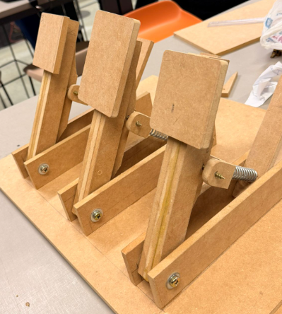

Projeto 1
FREEHAND: Adaptive Drive.
Grupo:
Rodrigo Borba, Isabela Melo, Arthur Burgos, Fernando Sotero,
Gabriel Cassemiro, Matheus Enrico, Sophia Coutinho, Sophia Rodrigues Tainá Leão.
FREEHAND: Adaptive Drive.
Grupo:
Rodrigo Borba, Isabela Melo, Arthur Burgos, Fernando Sotero,
Gabriel Cassemiro, Matheus Enrico, Sophia Coutinho, Sophia Rodrigues Tainá Leão.
FREEHAND é um projeto de um periférico, com três pedais para jogos de corrida, para conectar a um computador
para possibilitar que pessoas com dificuldade, ou ausência, de movimentação de um membro superior,
ou mesmo a falta de ambos os membros superiores, joguem de forma independente.
Os pedais funcionam a partir de um arduino e Três sensores FSR que iram detectar a pressão feita no pedal.
-
Os comandos para o controle do carro no jogo são:
pressionando os padais da esquerda e da direita juntos, o carro irá acelerar e seguir em linha reta;
pressionando somente o pedal da esquerda, o carro irá virar para a esquerda;
pressionando somente o pedal da direita, o carro irá virar para a direita;
pressionando o pedal do meio, o carro irá frear.
